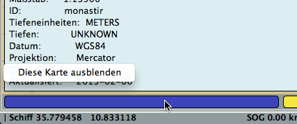

Karten "Quilting"
Karten "Quilting" (Patchwork) ist ein Weg, Teile mehrerer Karten zusammen auf dem Bildschirm anzuzeigen, umgezeichnet auf den gleichen Maßstab.
Einschränkungen
Karten Quilting geht nicht mit Transverse Mercator Karten zusammen mit Mercator Karten, wie sie in Ländern wie Neuseeland und
Schweden gebräuchlich sind. Mehr zu diesem Thema weiter unten.
Mit Transverse Mercator oder Policonic Karten-Quilting können schwarze Bereiche auftauchen in Bereichen, die nicht von Karten abgedeckt sind.
Beim Quilten wird jegliche Information im weißen Rand um eine Karte ausgeblendet. Mit der "fn-F9" Taste kann man in den Einzel-Modus wechseln und
diese Informationen so zeitweise wieder sehen. Gedrehte Karten quilten nicht, wenn die Drehung größer als 5 Grad ist.
Schnell-Start
Wurde "Quilting" in den Einstellungen unter Grundeinstellungen aktiviert, kommen Sie mit der fn-F9 Taste in den"Quilting" Modus.
Ein-Zoomen bringt automatisch Karten im größeren Maßstab, wenn vorhanden.
Verschieben resultiert in kontinuierlichem "Quilting" der vorhandenen Karten. Starten Sie mit einer Raster Karter, sind nur Raster Karten und vielleicht CM93 Karten
im "Quilting". Die gleiche Logik trifft auf S57 Vektor Karten (ENCs) zu. Seien Sie vertraut mit der Status-Zeile, das hilft Ihnen bei der Interpretation
aller verfügbaren Informationen. Der "Quilt" kann wie eine einzelne Karte Nord-orientiert oder Kurs-orientiert angezeigt werden. Mehr hier.
Weitere Details
Was ist der Nutzen dieses Features?

Im Einzel-Karten Modus gibt es am Rand der Karte keine Informationen außerhalb der Karte.
Diese Situation ändert sich signifikant, wenn der "Quilting" Modus aktiviert ist. Die Anzahl relevanter Information auf dem Bildschirm erhöht sich.
Anzeige der Karten
OpenCPN hat zwei Modi zum Anzeigen von Karten, Einzel-Karten Modus und "Quilting" Modus.
Zur Aktivierung von Karten "Quilting" gehen Sie in die Einstellungen --> Grundeinstellungen --> Einstellungen zur Kartendarstellung und markieren Sie "Patchwork Kartenanzeige aktivieren". Aktivieren Sie auch "Kartenumrisse anzeigen", da dies hilft, den aktuellen Karten-Modus zu sehen. Bei CM93 kann der Kartenumriß nur bei abgeschaltetem "Quilting" gesehen werden.
Alternativ kann der "Quilting" Modus mit der "fn-F9" Taste an/aus geschaltet werden.
"Quilting" im Vollbildmodus deaktivieren
Einstellungen --> Grundeinstellungen --> "Patchwork" Kartenanzeige im Vollbildmodus deaktivieren. In der Grundeinstellung sind alle Karten eines passenden
Maßstabs im Quilt sichtbar. Mit dieser Aktivierung werden nur Karten im überlappenden Mittenbereich des Bildschirms im Quilt verwendet. Das verringert
den Rechenbedarf in einigen Systemen und kann so zu einer Leistungssteigerung führen.
Ist Karten "Quilting" ein?
Ist "Quilting" ein, dann verschwinden alle Karten Umrisse.
Wird der Mauszeiger über einen Karten Button im Einzel-Karten Modus bewegt, dann wird eine Miniatur Karte in der oberen linken Ecke des Bildschirms gezeigt. Gleichzeitig erscheint eine Popup Box mit Karten-Informationen zur Karte über dem Button. Das ändert sich bei "Quilting". Die Miniatur wird ersetzt durch markierten Teil der Karte in einer transparenten rötlichen Farbe.
Ausnahme dieser letzten Regel sind CM93 Karten. Wenn ein Gebiet nur von CM93 Karten abgedeckt ist, sichtbar am langen gelben Karten Button in der Status-Zeile, wird im "Quilting" Modus keine Info-Box angezeigt und es erfolgt keine rötliche Markierung.
Es kann mehr als eine Karte zur gleichen Zeit angezeigt werden und aktiv sein. Im Bild oben gibt es z.B. drei hellblaue Buttons, weil drei Raster Karten in diesem "Quilting" sind. Im Einzel-Karten Modus ist nur ein Button gleichzeitig markiert.
Normalerweise werden Tiefen-Einheiten in der oberen rechten Ecke des Displays angezeigt, wenn in den Einstellungen aktiviert. Im "Quilting" Modus erfolgt die Anzeige nur, wenn alle Karten die gleiche Einheit haben.
Der Zoom-Wert, normalerweise ganz rechts in der Status-Zeile angezeigt, ist bei "Quilting" nicht vorhanden.
Viele weitere Features sind in diesem Bildschirmfoto enthalten.
Das ist ein "Quilting" bestehend aus drei Raster Karten, zwei werden aktuell angezeigt und eine Karte mit kleinerem Maßstab ist versteckt hinter der
Karte von St. Croix mit großem Maßstab.
Das ist der Button für die nicht angezeigte Karte im "Quilting".
Der Mauszeiger ist über der mittleren Raster Karte und die Karten Informations Box wird angezeigt zusammen mit der roten Markierung der Karte auf dem Bildschirm.
In dem "Quilting" werden keine Tiefen-Einheiten gezeigt, da die linke Karte in Fuß ist und die rechte in Faden. Beachten Sie den fehlenden Zoom-Wert in der
Status-Zeile. Ein "Quilting" besteht per Definition aus mehreren verschiedenen Zoom-Werten.
Welche Karten für "Quilting"?
Es gibt mehrere in OpenCPN eingebaute Regeln, wie sich verschiedene Karten im "Quilting" Modus verhalten.
Raster Karten und Vektor Karten sind im "Quilting" separat und können nicht gemischt werden. Es können entweder Raster Karten
oder Vector Karten im "Quilting" sein, aber nicht beide gleichzeitig. Ausnahme von dieser Regel sind CM93 Version 2 Karten, die - falls verfügbar - angezeigt werden,
wenn keine andere Karte im angezeigten Gebiet existiert, egal ob Raster oder Vektor Karten "Quilting".
Transverse Mercator Karten, die alle Raster Karten sind, quilten streng separat. In dem Fall erscheinen schwarze Bereiche für die Nicht-Abdeckungen.
Polyconic Karten, die ebenfalls alle Raster Karten sind, quilten auch streng separat. In dem Fall erscheinen schwarze Bereiche für die Nicht-Abdeckungen.
CM93 Version 2 Karten sind im "Quilting" separat.
Mercator Karten können immer im "Quilting" Modus sein aber nicht zusammen mit Transverse Mercator oder Polyconic Karten.
Polyconic Karten quilten separat und können nicht mit Mercator oder Transverse Mercator Karten gemischt werden.
Verzogene Karten sind im "Quilting" erlaubt, solange ihre Verzerrung 5 Grad von der Nord-Richtung nicht überschreitet.
Transverse Mercator Karten quilten separat von Mercator und Polyconic Karten.
BSB4 und NV-Karten mit Plugins quilten mit anderen Rasterkarten nach obigen Regeln.
Anwender Kontrolle.
Anwender können kontrollieren, ob eine bestimmte Karte im "Quilting" enthalten ist oder nicht. Rechts-Klick auf irgendeine Karte im "Quilting" und Auswahl von "Diese Karte ausblenden" im Kontext-Menü entfernt die Karte aus dem "Quilting". Rechts-Klick auf den Karten-Button in der Statuszeile bewirkt ein einzelnes Popup-Menü mit "Diese Karte ausblenden" (siehe Bilder unten).

Der Karten-Button in der Status-Zeile ändert sich zu  .
.
Die Wiederaktivierung der Karte erfolgt mit Rechts-Klick auf den Karten-Button und dem Menü-Punkt "Zeige diese Karte". Da die Karte nicht mehr im
Karten-Bildschirm vorhanden ist, geht das also nur auf der Status-Zeile.
Kontrolle des Maßstabs der Quilt-Ansicht
"Quilt-Referenz-Karte" ist die ganz linke Karte im größten Maßstab, die markiert ist. Das ist die links der beiden hell-blauen Buttons oben.
Klicken Sie den nächsten blauen Karten Button einmal rechts der aktuellen Referenz-Karte. Der Referenz-Maßstab des Quilt verringert sich, aber der
Ansichtspunkt ändert sich nicht. Die gleiche Logik geschieht beim Klick einmal links der Referenz-Karte, außer daß sich der Maßstab des
Quilt vergrößert. Ein-/Aus-Zoomen bewegt ebenfalls die Referenz-Karte nach rechts oder links.
Bekannte Probleme mit einigen NOAA Enc's
Einige NOAA ENC's sind mit "Löchern" erstellt. Das ältere OpenCPN Quilting Modell konnte damit nicht umgehen und es waren unter Umständen graue Bereiche
zu sehen. Das Bild oben ist von St. Croix in der Karibik. Es sind drei unterschiedliche graue Bereiche zu sehen.
Das nördliche graue Rechteck ist ein "unerforschter" Bereich, wo es seltsamerweise einen "erforschten" Bereich in kleinerem Maßstab gibt. Mit der
unteren Kartenleiste kann man erforderlichenfalls in diese klein skalierte Karte wechseln. Beachten Sie den schwarzen Rahmen. Die mittleren zwei grauen Rechtecke
sind Löcher in einer klein skalierten Karte, wo es groß skalierte Karten gibt. Beachten Sie den grünen Rahmen, der auf verfügbare Karten im
größeren Maßstab hinweist. Das südliche graue Rechteck ist ein "Loch" ohne jegliche Informationen und keinen anderen ENC Karten verfügbar.
Beachten Sie, daß es keinen Rahmen um diesen Bereich gibt.
Im aktuellen Quilting Modell sieht dieser Bereich wie oben aus. OpenCPN beherrscht dies nun besser. Das "Loch" beruht auf dem nicht vermessenen Bereich in diesem Maßstab.